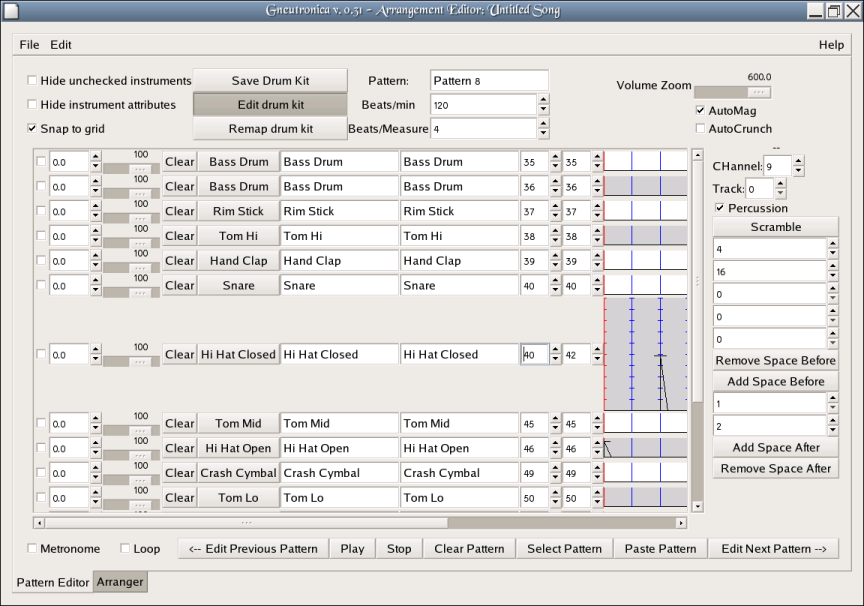
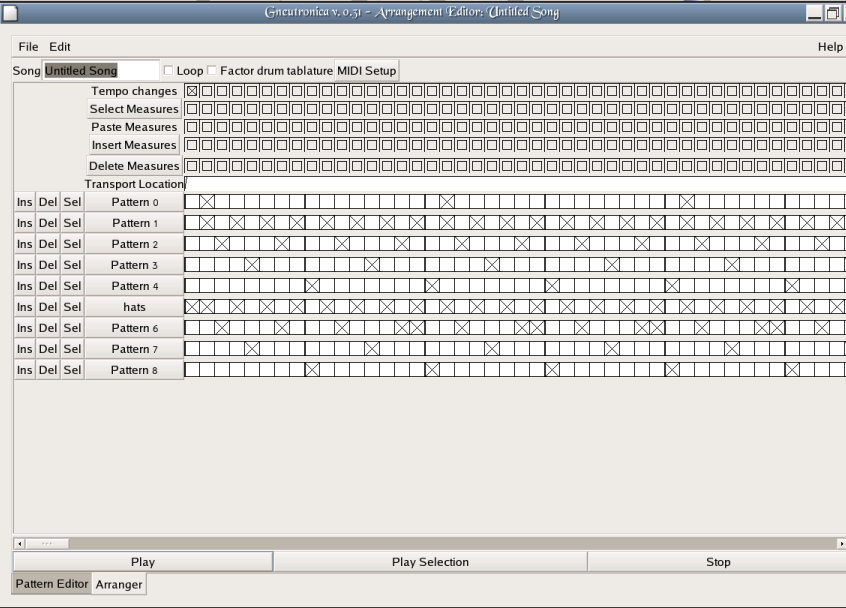

Gneutronica -- a MIDI drum machine for Linux
Last Updated Jul 9, 2005, by Stephen Cameron
Gneutronica is a simple MIDI drum machine program modeled to a large extent on the Hydrogen sample-based drum machine software also available for linux. If you are familiar with Hydrogen, you'll find yourself pretty much at home with Gneutronica. Gneutronica lets you create patterns of drum beats one measure long, allows you to divide up the measure into however many beats you like (several times simultaneously, if you want) and then arrange those patterns into a sequence for playback. Essentially it's a tool with which to create drum tracks and play them back via MIDI devices.
Right now (July 4, 2005), Gneutronica is quite small, less than 3000 lines of code, last time I checked. It doesn't try to do everything, and there are probably some strange things about the user interface which are due to my lack of knowledge about Gnome programming. Gneutronica is my very first Gnome program ever, and it's been probably 8 or 10 years since the last time I did any sort of X-windows programming at all. My knowledge of MIDI is also rather sketchy. That could be viewed as good news for anyone looking for a project to learn gnome or MIDI programming with. This program is still small and easy to understand.
Having said all that, I think it may have reached the stage of actually being useful, and it's pretty easy to use, so I thought I'd throw it out there in case anyone else might be wishing Hydrogen could talk to MIDI devices, or that it had a gnome interface. These two perceived shortcomings of Hydrogen, (at least I considered them to be shortcomings,) plus a desire to learn gnome and MIDI programming are what led me to create Gneutronica.
Really easy, has not been "autoconfiscated" or anything, just type make.
[scameron@zuul gneutronica]$ make cc -c -o sched.o sched.c gcc -g -o gneutronica -I/usr/include/libgnomecanvas-2.0 sched.o gneutronica.c `pkg-config --cflags --libs gtk+-2.0` [scameron@zuul gneutronica]$
And running it . . . (eh, I left some debugging output in there still.)
[scameron@zuul gneutronica]$ ./gneutronica -d /dev/snd/midi1 -k generic.dk pid = 0 Player waiting for requests parent, pid =5153 Using drumkit: Generic Generic Generic
The first thing you need to do to get started with Gneutronica is to get your MIDI device hooked up to your computer and able to make sound. I'm going to assume you've gotten that far. As of this writing, I'm pretty sure that soundcard based MIDI devices, softsynths, etc. don't work with Gneutronica, though I expect it would be easy to modify the program to get them to work. I have tried Gneutronica with a Yamaha Motif Rack, connected by USB, and a Kurzweil PC88, and a Roland (BOSS) Dr. Rhythm 660 drum machine, the latter two connected via USB through an M-audio (or Midiman) MidiSport 2x2 USB to MIDI converter. (Getting the Midisport to work with Fedora core 3 and 4 wasn't too bad, the worst part was getting the necessary firmware image.) For the BOSS DR-660 drum machine, I had to change the settings to make it receive on MIDI channel 1 instead of 10. I'm not sure why, and I've since come to know that channel 10 is the General Midi channel for "drums," but I'm unclear on exactly what that means, and in any case, changing this parameter on the Roland drum machine to 1 made it work for me. I also tried to use a Roland keyboard, but have so far been unsuccessful. I suspect this was related to MIDI channels. Anyway, there is some work to be done there. However, for 3 of the 4 devices I tried, you could just set the machine to a percussion preset via its front panel controls, and then you were at least able to make some sound via the MIDI interface which corresponded to the front panel settings. Gneutronica does not currently try to send any MIDI program change messages by default, so setting things up from the front panel of the device is currently necessary. (However, I just added a "Midi Setup" button with the ability to send bank and patch change messages, but it's not yet well tested, so I'm not completely sure it's all working right. Eventually it should work.)
Once you have your device connected and fired up, you need to start Gneutronica. By default, it will use /dev/snd/midi1 as the MIDI device it talks to. This can be changed by the "-d" parameter. When first firing it up you may also wish to tell it to use an alternate drum specification file with the -k option. There is a General MIDI standard one which may be useful if you select a GM percussion compatible preset on your machine. If not, you may wish to use generic.dk, by specifying "-k drumkits/generic.dk" on the command line when starting the program. This drumkit lets you send to all 127 notes without trying to guess the names. Doing this, you can create your own drum specification file, which follows a simple format, a bunch of strings of characters, seperated by commas. The first line is used to identify the file format, in case it changes in the future. The second line contains the manufacturer, make and model, and subsequent lines specify instrments, with a pair of names, and a MIDI note number. The first name will appear in buttons in Gneutronica, and the second in tooltip windows. So the first name should be short enough to fit in a button, and the 2nd may be longer.
Gneutronica drumkit file format 1 Manufacture, Model, drumkit name Instrument 1, description of instrument 1, 1 Instrument 2, description of instrument 2, 2
However, that is the hard way, as now there is a drumkit editor. Just click the "Edit Drum Kit" button on the pattern window, and you should see something like this:

This will allow you to play the instruments by hitting the instrument button, hear it, and then type in the instrument name, type, and MIDI note number without having to think too hard abuot it.
BTW, if you make a new drumkit file for a new device, or a new preset on a device send it to me, (smcameron@users.sourceforge.net) and I'll include it in the next release.
When you first start up Gneutronica, you are presented with two windows, the Arrangement Editor, and the Pattern Editor. The pattern editor lets you construct a pattern of drum beats one measure long, and the arrangement editor lets you arrange those one-measure-long patterns into a sequence.
Here is the pattern editor:

The grid in the center is where the pattern is constructed. Time runs along the horizontal axis, and the instruments are on the vertical axis, along the left hand side. The vertical lines divide the measure into time intervals, and control where notes may be placed. There are five sets of such lines, but by default, only two are active, the red lines, and the blue lines. The red lines divide the measure into quarters, and the blue lines divide the measure into 16ths. The divisions are controllable by the numbers in the "spin-boxes" on the right hand side of the screen. A value of zero or one essentially makes a set of lines inactive. A value of 2 divides the measure in half into 2 equal sized pieces, a value of 3 divides it into 3rds, 4 into 4ths, 5 into 5ths, etc. You can divide the measure all the way down to mincemeat, that is, to 400ths. Whether or not your MIDI device and Gneutronica can acutally perform a very dense measure successfully is another question though. And you can divide it 5 times independently to set up polyrhythms like 3 against 4, or even go all Chopin with something crazy like 13 against 17 or some even bigger prime number
You set up a pattern by clicking in the central grid. For example, if you wanted to create a simple backbeat with bass drum on beats 1 and 3 and snare on 2 and 4, you'd find a bass drum you like, and click next to it on the very left hand edge of the central grid (beat 1) and on the middle red line (beat 3) and click next to the snare drum on the 1st and 3rd red lines (beats 3 and 4). Easy. You can listen to your pattern by pressing the "play" button. Clicking on the instrument buttons plays the instrument, but does not change the pattern. Some instruments (whistles) require a MIDI "note-off" message before they will ever quit making sound. The "Stop" button is useful if you hit one of those. Right now Gneutronica generally doesn't send "note-off" messages. (Yeah, that's a bug.)
Controlling the volume of notes: There are several ways of controlling the volume of notes placed in the grid. When using the left mouse button to place notes, the height above the line for each instrument controls the volume. So if you click very close to the horizontal line for an instrument, the note will be very quiet, and the further above the line you click, the louder the note will be. Changing the volume of already placed notes is as easy as clicking on the note a little bit higher, or lower to raise or lower the volume for that note. Since MIDI note volume (velocity, more precisely) has a range of 0-127, this method of setting the volume, though while quite convenient, is not as precise as one might one, since the area of pixels in which you click the mouse is only about 30 pixels high, you don't get the full 0-127 values, but only a down-sampled 30 values. There is a "Volume Zoom" feature which allows you to expand the height of the area for the current instrument by a preset amount. You can see this in action above for the instrument "HHPclRkStSW" (hey, that's what Yamaha called it -- it's a Hi hat.) Using this, you get the same convenience of single-click placement of notes in both time and velocity, and you get the needed precision, and as each instrument is automatically expanded and contracted as you place notes, you still get to see plenty of instruments onscreen at once. Explaining it is more difficult than using, if you just move the "Volume Zoom" slider around and watch the screen, and click on a few notes, you'll immediately see how it works.
To delete a note, click on it with the right or middle mouse buttons. You can also use the "Clear" button that's next to each instrument to delete all the notes for that instrument in that pattern. This button will only be visible if the "Hide Instrument Attributes" checkbox is not checked.
There is another way to control the volume of notes. There is a volume slider to the left of each instrument. This sets a default volume. Whenever you place a note on the grid by using the middle mouse button, this default volume will be used. If you wish to place a series of notes with a uniform volume, the way to do it is to set the volume with the slider, then place all the notes on the grid with the middle mouse button.
The "Beats per Minute" controls the tempo of single-pattern playback (but not the tempo of the pattern within a song, which is controllable measure by measure, and a pattern may appear in more than one measure). The "Beats per Measure" affects the pattern in both single-pattern playback and within the context of the song. It is essentially a way for you to tell Gneutronica how many beats you consider the pattern to contain, regardless of what notes are actually in the pattern, or how they are arranged.
the "Next" and "previous" pattern buttons allow the pattern editor to travers the list of patterns you will create as you make a song. You can name your patterns by entering whatever text you like (but not single quotes) in the "Pattern" field. The "Hide unchecked instruments" box allows you to reduce the size of the list of instruments. Typically a pattern, or even a song will use just a few instruments, but the drumkits typically contain very many instruments, which can lead to a lot of superflous scrolling around. By checking the boxes next to the instruments you are actually using, and checking the "Hide unchecked instruments" box, you can reduce this scrolling.
Some additional features are available if the "Hide Instrument Attributes" checkbox is not checked. In that case, there will be a "spinbox" at the extreme left hand side of each instrument row in the pattern window. This controls "drag" or "rushing" of an instrument. You set the percentage of a beat you wish the instrument to "drag" behind the "correct" time. If you use a negative number, you get negative drag, or, rushing, the instrument will play "too soon," compared to correct time.
Next to the drag control is the default volume control, a simple slider which sets the default volume for notes. (See more above about setting the volume of notes.) After the default volume control is a button to clear all the notes of that instrument from a pattern.
Here is the arranger window:

The idea is you have all your patterns lined up in a column on the left, and a grid representing what measures are played in what sequence on the right. Each column in the grid represents one measure, and you click in the square next to each pattern which is to be played in any given measure.
Notice that you can have more than one pattern playing in a given measure. For example if I wanted to add a ride cymbal to a sequence of patterns in the 2nd half of the song, I could make a pattern called "ride" which would contain only the ride cymbal. Then I could superimpose this pattern over my previous backbeat patterns by just clicking boxes in the Arrangement editor. Of course you don't have to do things this way, you could just as easily copied all the patterns to new patterns and modified each pattern to add ride cymbal to it. And in fact this is even easier than it sounds, as in the pattern window the "Paste" button really superimposes a selected pattern onto the pattern currently being edited, so you could create a pattern with only ride cymbal, then create new patterns by copying old patterns and then using the paste button to superimpose the ride cymbal pattern into those new patterns. There are lots of different ways of working.
The "Tempo changes" buttons above each measure allow you to set changes in tempo at measure boundaries.. When pressed, a window pops up that lets you specify a new tempo in beats per minute which takes effect at the beginning of the measure corresponding to the button you pressed, and which remains in effect until the next tempo change you specify. There is always at least one tempo "change" at the beginning of the first measure, specifyhing the initial tempo. Tempo changes can also be deleted if you change your mind, by using the same buttons.
The "Select measures" button will select all measures, or unselect all measures if any are already selected. Additionally, clicking on the buttons to the right of the "Select" button will select individual measures. Or, if you click on one of those buttons, then drag to another button before releasing, you can select multiple measures.
The "Delete measures" button will delete selected measures. Or, selecting the individual buttons to the right of the "Delete" button will delete single measures.
The "Insert measures" button will insert blank measures for however many measures are currently selected directly before the selection. The individual buttons to the right will insert single blank measures.
The "Paste" buttons will insert copies of whatever measures are currently selected.
The "Sel" button will select the pattern it's to which it is adjacent, this selection is later used by the "Paste" button in the pattern editor window.
The "Ins" pattern button is currently not implemented and does not do anything.
The "Del" button will delete the pattern to which it's adjacent, and remove any instances of this pattern in any measures in which it occurs.
The buttons which contain the pattern names will cause the pattern editor window to jump to that pattern, which is convenient for navigating (rather than pressing "Next Pattern" or "Previous Pattern" pattern buttons repeatedly to scroll through them all.
Under the File menu in the arranger window, you will find the following options:
Some things Gneutronica doesn't do
BUGS: You betcha. It uses and abuses fscanf() for one thing... For another, it doesn't generally send any "Note off" messages during normal playback.